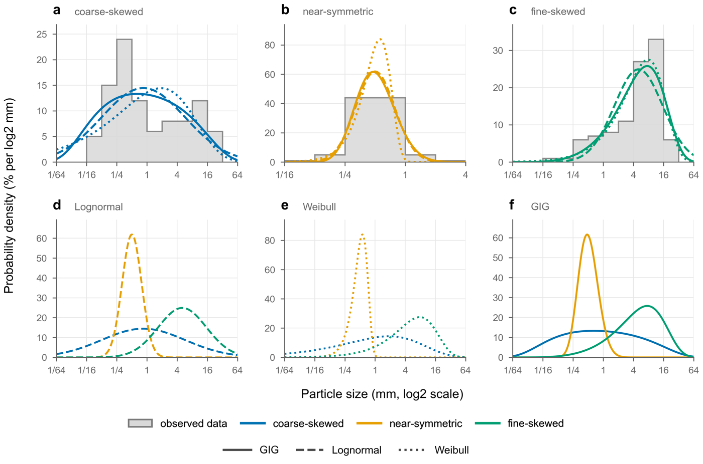

Hybrid hydrologic modeling
Pairing process-based models (E3SM, ELM, MOSART) with machine-learning parameterizations and emulators, and checking them against conservation and observations.
Postdoctoral Researcher · Lehigh University
Hydrology · Earth System Modeling · Riverine Biogeochemistry · Environmental AI
Scientific Machine Learning · Geospatial Data Products · Simulation Software & HPC
I study how water, carbon and human management interact across river networks. My work combines process-based Earth system models with observation-constrained machine learning to represent land-to-river carbon transfer, lake processes, and the exchanges among groundwater, reservoirs and rivers.
My doctoral research produced national maps of dissolved organic carbon transformation rates and the ELM-MOSART-DOC river carbon model in E3SM. At Lehigh I develop MOSART-Lake, couple groundwater and reservoir-policy models in the DOE RIVER-AI project, and build global environmental data products.
I turn heterogeneous environmental data and hard scientific questions into reproducible models, validated predictions and usable data products. I write Python and Fortran, run large simulations on DOE supercomputers, and build interpretable machine-learning workflows that scale to millions of catchments and river reaches.
Recent work includes an LSTM emulator deployed across ~50,000 lake objects, coupling interfaces between a river model, a groundwater emulator and LLM-driven reservoir policies, and global geospatial ML products released with open data and code.
Research themes
What I bring
Pairing process-based models (E3SM, ELM, MOSART) with machine-learning parameterizations and emulators, and checking them against conservation and observations.
How dissolved organic carbon leaves soils, moves through river networks and is altered by reservoirs, from catchment maps to a coupled river model.
Observation-constrained maps for millions of catchments and river reaches: DOC transformation rates, riverbed grain size and lake parameters.
Lake water and heat budgets with snow and ice, groundwater–river exchange, and reservoir operations — including AI-based policies — in managed basins.
XGBoost and tree ensembles with SHAP, feature screening and sensitivity analysis; LSTM emulators with explicit train/test separation.
Pipelines that join monitoring data to river networks and basins (NHDPlus, HydroATLAS, HydroRIVERS, HydroLAKES) at national and global scale.
Fortran and Python development inside large coupled models, model coupling interfaces, and production runs on NERSC Perlmutter and OLCF Frontier.
Mass and heat budget checks, bit-for-bit regression tests, held-out evaluation, automated tests and versioned data and code releases.
Selected projects
In the DOE RIVER-AI project I develop and evaluate the interfaces that connect a machine-learning groundwater emulator and reservoir-operation policies — including LLM-based policies — to the MOSART-Urban river-network model. The first application is the upper Delaware River Basin, with the goal of understanding managed flow variability and resilience.
Implemented and tested coupling interfaces between a Python river-network model, an ML groundwater emulator and LLM-driven reservoir policies: spatial and calendar alignment, alternative exchange schemes, water-budget diagnostics, bit-for-bit regression checks and comparison against observed streamflow.
I own the river-model side: the interfaces, integration and evaluation. The ParFlow simulations, the groundwater emulator and the reservoir policies are developed by partner teams. This is active, unpublished work, so no results are shown here.
I develop lake water balance, outflow, temperature, and snow and ice representations in MOSART-Lake, the river component of the DOE Energy Exascale Earth System Model (E3SM). The work combines process-based simulation with an offline LSTM emulator for lake ice, and multi-decade evaluation against satellite lake-area and surface-temperature products.
Built an LSTM emulator and NetCDF deployment workflow for 49,708 lake objects: ten dynamic forcings and five static inputs, a locked temporal test period, physically constrained outputs, integrity checks and numerical parity between the training stack and the deployed inference code.
Model development, the snow and ice emulator, simulation diagnostics and the manuscript draft. The model is under active development; performance numbers will be shared once the production version is published.
My doctoral work built a land-to-river carbon chain. First, observation-constrained maps of the DOC transformation rate for more than 2.6 million U.S. catchments (ESSD 2025). These parameterize ELM-MOSART-DOC, a riverine DOC model in E3SM that represents soil leaching, river transport and transformation, and reservoir regulation (JAMES 2026). Against long-term monitoring the model reached KGE 0.58 at large-river and 0.76 at local stations, and it estimates a 7.5% reservoir-associated reduction in Mississippi River DOC export.
Built an interpretable XGBoost workflow that combines river chemistry, soil-carbon and watershed data to predict a carbon parameter for more than 2.6 million catchments, then implemented and validated a coupled land–river carbon model in Fortran (E3SM) against national river monitoring records. Both data and code are public.
First author of both papers; led model development, mapping and evaluation. The model code is built on E3SM v2.1.0, whose wider codebase belongs to the E3SM community.
I extended the U.S. framework to 1,034,083 HydroBASINS catchments using globally harmonized HydroATLAS predictors, with representativeness analysis of where the training data apply and external evaluation against GLORICH river chemistry outside the U.S.
A reproducible regional-to-global prediction pipeline: preprocessing, feature screening, XGBoost training, domain-representativeness diagnostics, external validation and GIS-ready outputs for 1.03 million basins worldwide.
First author; designed and ran the full workflow. The manuscript is submitted to Scientific Data; the dataset and code are already public.

A global map of riverbed median grain size (D50) for about 8.5 million HydroRIVERS reaches. We harmonized sieve and literature observations, matched them to the river network, trained XGBoost models and mapped where the predictions are applicable.
Global geospatial ML for 8.48 million river reaches: matching field observations to the river network, data-quality controls, feature analysis and area-of-applicability diagnostics, released as an open dataset.
Equal-contribution author with Kseniia A. Gerasimova: data harmonization, model development and improvement, and figures. The public dataset is an earlier version than the manuscript in revision.
A Generalized Inverse Gaussian (GIG) representation of riverbed particle-size distributions whose parameters are hydraulically interpretable, fitted to 19,765 U.S. samples from 2,114 stations and checked on independent Lower Rhine samples.
Packaged a reproducible Python workflow that fits and compares 25 candidate distributions with multi-start optimization, BIC/AIC model selection and percentile inversion, with 47 automated tests and scripts that regenerate every table and figure.
Second author on Kseniia A. Gerasimova's study: distribution fitting, model comparison, analysis reproduction and the software and data release.

A multiresolution workflow linking the HydroLAKES inventory and GLOBathy bathymetry to MOSART river grids. It classifies main-channel and tributary lakes, resolves their placement using drainage area and shorelines, merges lake objects, fits area–depth–volume curves and writes NetCDF parameters.
Reusable Python/NetCDF pipeline that processes about 1.42 million lake records: spatial matching, parallel curve fitting, configurable grid resolution and automated QA/QC reports on completeness and placement.
Compared five tree-based ensembles for predicting E. coli-based beach water quality at three Lake Erie beaches, and used SHAP to interpret environmental drivers and their interactions. My most-cited paper.
Benchmarked classification trees, random forest, CatBoost, XGBoost and LightGBM, and used global and local SHAP explanations to connect microbial water-quality predictions to the environmental conditions behind them. My most-cited paper (289 citations on Google Scholar).
Took part in the DOE Genesis Mission Hackathon at Argonne National Laboratory (October 2026) for the RIVER-AI team. I use AI coding agents with explicit task scope, human review and numerical checks for model diagnostics, documentation and HPC job coordination.
Side project: ai-frontier-watch, a public pipeline that runs weekly on GitHub Actions, calls an LLM API with web search and structured outputs, and publishes a bilingual AI research digest to GitHub Pages.
Experience & education
Feb 2026 – present
Department of Civil and Environmental Engineering and Center for Catastrophe Modeling and Resilience · Bethlehem, PA · Supervisor: Prof. Hong-Yi Li
Jun 2025 – Dec 2025
Earth System Modeling Group · Mentor: Dr. Xiaojuan Yang
Sep 2021 – Dec 2025
Department of Civil and Environmental Engineering · Advisor: Prof. Hong-Yi Li · GPA 4.0/4.0
Dissertation: Bridging Artificial Intelligence and Earth System Modeling for Land-to-River Carbon Fluxes. Graduate Research Assistant throughout.
Sep 2019 – Dec 2020
Research Assistant, Feb – Dec 2020
Interpretable machine learning for beach water quality; satellite-constrained emission estimates.
Sep 2015 – Jul 2019
Xi'an, China
Publications
Full and current list on Google Scholar. First author marks papers I led.
Li, L., Li, H.-Y., Abeshu, G., Yang, X., Tang, J., Tan, Z., Liao, C., Feng, D., Thornton, P., & Leung, L. R. (2026). ELM-MOSART-DOC: A large-scale riverine dissolved organic carbon model and its application over the United States. Journal of Advances in Modeling Earth Systems, 18(2), e2025MS005307.
Li, L., Li, H.-Y., Abeshu, G., Tang, J., Leung, L. R., Liao, C., Tan, Z., Tian, H., Thornton, P., & Yang, X. (2025). Transformation rate maps of dissolved organic carbon in the contiguous US. Earth System Science Data, 17, 2713–2733.
Li, L., Qiao, J., Yu, G., Wang, L., Li, H.-Y., Liao, C., & Zhu, Z. (2022). Interpretable tree-based ensemble model for predicting beach water quality. Water Research, 211, 118078.
Sun, K., Li, L., Jagini, S., & Li, D. (2021). A satellite-data-driven framework to rapidly quantify air-basin-scale NOx emissions and its application to the Po Valley during the COVID-19 pandemic. Atmospheric Chemistry and Physics, 21, 13311–13332.
Wang, W., Lv, J., Xu, D., Li, L., & Jia, Y. (2017). Migration of induced-infiltration stream water into nearby aquifer due to a transverse horizontal well in loess areas. Environmental Earth Sciences, 76, 572.
Li, L., Li, H.-Y., Yang, X., Jeffery, N., Tang, J., & Leung, L. R. A global map of dissolved organic carbon transformation rates. Submitted to Scientific Data.
Gerasimova, K. A.*, Li, L.*, Li, H.-Y., et al. A global riverbed median grain-size (D50) map for 8.5 million reaches. In preparation for Earth System Science Data. *Equal contribution.
Gerasimova, K. A., Li, L., Li, H.-Y., Zhu, Z., Abeshu, G., Deng, Z., Papanicolaou, A. N., & Leung, L. R. A riverbed sediment distribution function with hydraulically interpretable parameters improves water-resources estimates. In preparation.
Li, H.-Y., Li, L., Abeshu, G. W., et al. (2025). Modeling dissolved organic carbon in managed US rivers. AGU Fall Meeting, H13T-1342.
Li, L., Li, H.-Y., Abeshu, G. W., Yang, X., Tang, J., Thornton, P. E., & Leung, L. R. (2023). MOSART-DOC: A new large-scale riverine dissolved organic carbon model and its application over the United States. AGU Fall Meeting.
Gerasimova, K., Li, H., Abeshu, G. W., & Li, L. (2023). Mapping river sediment particle size distribution function over the contiguous US. AGU Fall Meeting.
Li, L., Li, H.-Y., Abeshu, G. W., Tan, Z., Liao, C., Yang, X., & Leung, L. R. (2022). Deriving a solubility map of soil organic carbon over the contiguous US. AGU Fall Meeting, B54A-03.
Open data & code
Feature selection, training and validation for the CONUS DOC maps.
Global DOC transformation-rate workflow.
MOSART lake parameters from HydroLAKES and GLOBathy.
Fitting and evaluation code for the GIG particle-size distribution.
Automated weekly AI research digest on GitHub Actions and Pages.
Skills
E3SM, ELM, MOSART, MOSART-Lake, MOSART-Urban; river carbon, reservoirs, lake hydrology and thermal processes; coupling interfaces.
Python, Fortran, shell, Git, NetCDF; Linux and Slurm on NERSC Perlmutter and OLCF Frontier; pytest-based regression and parity tests.
XGBoost, LightGBM, CatBoost, random forests, SHAP, Optuna, sensitivity analysis; LSTM emulators with temporal validation and constrained outputs.
NHDPlus, HydroATLAS, HydroBASINS, HydroRIVERS, HydroLAKES, GLOBathy, soil and climate products; spatial matching, catchment aggregation, multiresolution grids.
Mass and heat budget closure, conservation diagnostics, held-out and spatial validation, KGE/NSE, distribution fitting with BIC/AIC, area-of-applicability analysis.
AI coding agents and LLM APIs for code inspection, documentation, analysis and HPC job coordination, always with human review and numerical checks.
Training (course completion): Micro-credential in High-Performance Computing (2025) · Scientific Computing in C++ (2025) · GPGPU Programming (2025) · Parallel Computing with OpenMP (2024) · Data Science and Scientific Computing using Julia (2024) · Introduction to Cluster Computing (2024).
Service
Reviewer for Water Resources Research, Journal of Water Resources Planning and Management, Environmental Modelling & Software, Journal of Hydrologic Engineering and Journal of Hydroinformatics.
Honors
Jimmie A. Schindewolf Academic Scholarship, University of Houston, 2024.
Contact